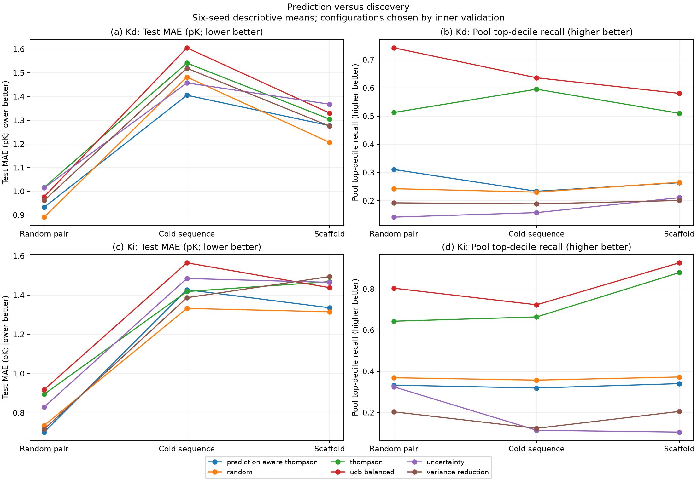
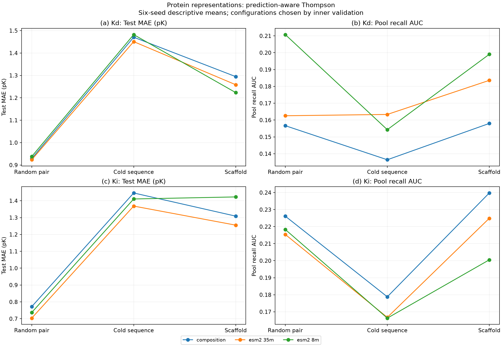

Leakage-controlled protein–lipid study
Leakage-controlled protein–lipid active learning
Completed retrospective study · 9,720 main campaigns + 1,296 new adaptation campaigns.
No demonstrated overall winner or statistical superiority. The new selector trades discovery for prediction on some tasks. These results do not constitute prospective validation.
Three splits, six seeds, three protein representations, five lipid representations, three kernels and six acquisition policies. Each campaign acquires 120 labels; additional inner-validation labels are explicitly charged. Test labels never select configurations.
Full methods and limitations · Main audit · Adaptation audit · All selected results
Prediction–discovery trade-off

Vector PDF
Frozen protein representations

Vector PDF
Thompson comparison
Recall is measured in the acquisition pool, not the outer test set. Lines connect split regimes for readability, not time. See raw per-seed files for variability; plots show descriptive means only.
Explanation checks
3,539 of 3,980 observed ECFP positions have multiple unfolded Morgan identifiers. Bit importance is not a unique chemical motif. Nonlinear individual-bit estimates cover only four models, two fixed queries each, and three backgrounds.
Four selected fragment examples map to heavy-atom contacts within 4 Å in two experimental complexes (4OAS and 6CDJ). These are illustrations, not independent mechanistic validation.
Collision audit · Background sensitivity · Experimental structure contacts
Interpretation limits
Repeated nested holdouts use one inner validation split, not full nested K-fold. Six overlapping seeds and 24 corrected tests are underpowered: the minimum attainable Holm-adjusted exact two-sided p-value is 0.75. No equivalence claim is justified.
Lipid SSL used only 790 scaffold-disjoint molecules. Supervised residual feature adapters used only the 24 initial labels and were frozen before acquisition; these are not attention LoRA. Two ESM-2 sizes are not two different protein-model families. Assay noise, prospective evaluation and broad contact-map validation remain open.
Updated full manuscript · Original benchmark and highlighted fragments